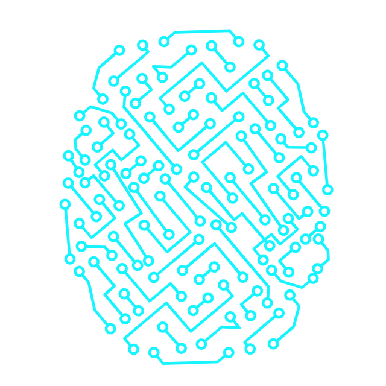

Sites
|

Construímos a ponte digital para o seu sucesso, com websites personalizados que se destacam. Nosso foco está em criar uma presença online única e memorável para sua marca. Com designs modernos e funcionais, garantimos uma experiência envolvente para seus visitantes. Do desenvolvimento à implementação, nossa equipe se dedica a atender suas necessidades. Conte conosco para transformar sua visão em realidade digital.
Seu website, personalizado do seu jeito
